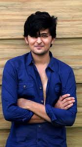

Darshan Raval (born 18 October 1994) is an Indian singer, composer, and songwriter. He is known for his work in different languages including Hindi, Gujarati, Punjabi and Bengali. In 2014, he participated in the StarPlus music reality show, India's Raw Star, finishing as the first "Runner-up"

Darshan Raval was born on October 18, 1994, in Ahmedabad, Gujarat, India.
Into a Gujarati Hindu family. His father, Rajendra Raval, is a freelance writer, and his mother, Rajal Raval, is a housemaker.
Before he entered into the entertainment industry, Raval faced academic challenges and was expelled from college due to poor academic performance.
Raval's career began in 2014, when he participated in the reality show India's Raw Star and was declared the first runner-up.[5][2] Raval has mentioned the support of Himesh Reshammiya as an important factor in his initial success in the Bollywood industry.[6][7] As of 2023, he has released several popular songs in different languages, including Hindi, Gujarati, and Telugu. Some of his notable works include" Ek ladki ko dekha", "Chogada", "Kheech meri Photo"
| Backgound information | ||||
| Born | Occupations | Genres | Years active | |
|---|---|---|---|---|
| 18 October 1994 (age 29) | Singer,composer,songwriter | Indian pop, Filmi | 2014–present | |
Raval was ranked in The Times Most Desirable Men at No. 45 in 2017.[9] He won awards for Transmedia Gujarati Screen and Stage Award for Best male singer
In 2020, he has released several songs, including Mehrama, Asal Mein, Bhula Dunga, Saari Ki Saari 2.0, Tere Naal and Ek Tarfa .Is Qadar, Dil mera blast.He has also launched his first album “Judaiyaan” which has gained millions of views and had won hearts of many people worldwide.
If you like my page please let me know by filling up this form